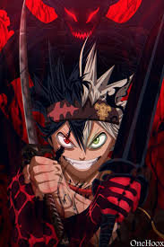
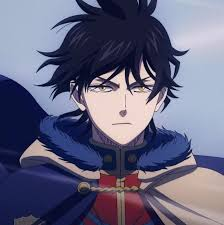
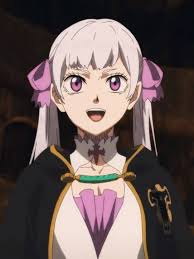

Black Clover
Released: October 3, 2017
Genre: Action, Fantasy, Magic
Black Clover follows Asta, a boy born without any magic in a world where magic is everything. Despite this, he dreams of becoming the Wizard King. With the help of his rival and childhood friend Yuno, who is extremely talented in magic, Asta embarks on an adventure to prove his worth.
Along the way, they join the Magic Knights and battle powerful foes while uncovering dark secrets surrounding the magical world.
Cast

Asta
Voice: Gakuto Kajiwara

Yuno
Voice: Nobunaga Shimazaki

Noelle Silva
Voice: Kana Yuuki
Yami Sukehiro
Voice: Kazuya Nakai
Epic Scenes
- Asta Awakens Demon Form
- Yami vs Dante
- Asta & Yuno vs Licht
- Noelle Valkyrie Armor Transformation
- Black Bulls Save the Capital
To watch Full Anime: Black Clover